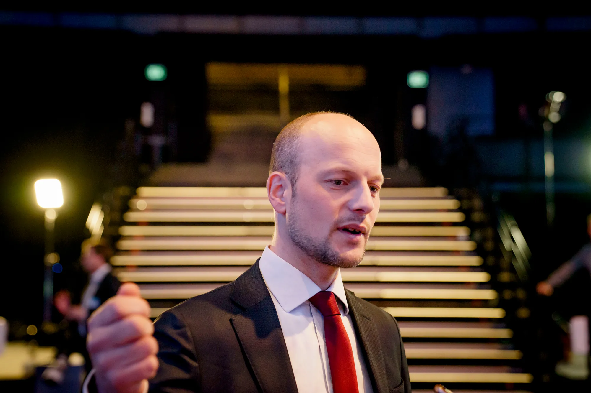
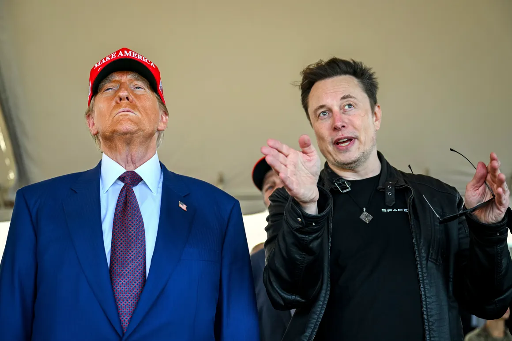

Analytiker: EU må slå tilbake mot tekgigantene
Med Donald Trump i ryggen har tekmilliardærene Elon Musk og Mark Zuckerberg startet en ren informasjonskrig mot EU, mener analytiker.

Link til selve artikkel
Oppsumering
1. Informasjonskrig mot EU Analytiker Georg Riekeles mener Elon Musk og Mark Zuckerberg, med støtte fra Trump, har startet en informasjonskrig mot EU for å svekke europeiske demokratier.
2. Konflikt med EU-lovgivning Techgigantene utfordrer EUs nye digitale lover (DMA og DSA), som kan gi milliardbøter. Meta har allerede fått en bot på 1,2 milliarder euro.
3. Desinformasjon og politisk påvirkning Musk har brukt X til å spre desinformasjon og støtte ytre høyre-partier, noe som skaper bekymring i EU. Han har også spredt falske nyheter om europeiske ledere.
4. EU-kommisjonens nølingEU har vært trege med å håndheve reglene, noe som kan skyldes frykt for Trumps reaksjon. Flere mener kommisjonen må handle raskere og tøffere mot techgigantene.
EU må reagere og slå langt kraftigere tilbake, sier Georg Riekeles, som er nestleder i tankesmia European Policy Centre (EPC) i Brussel, til NTB.
– Musk har startet en informasjonskrig som handler om å bryte ned europeiske demokratier, slår han fast.
– Han bygger opp løgner og konspirasjoner og sprer dem til millioner av følgere. I mine øyne er det en bevæpning av sosiale medier. Og det nye er at det ikke lenger er Russland eller andre autoritære regimer som gjør slike ting. Det er Musk. En amerikansk statsborger og verdens rikeste mann, en person som er på vei mot en fremtredende rolle i den amerikanske administrasjonen.
– Dette fordrer en sterkere respons fra europeisk side. Vi er akkurat nå i et sannhetens øyeblikk: Er vårt regelverk, vår lovgivningsevne og vår evne til å forsvare demokratiet reelle eller ikke? spør Riekeles.
Strammer seg til
Det er bare fire dager til Donald Trump inntar Det hvite hus. Men allerede før innsettelsen har kampen strammet seg til mellom EU og Elon Musks X og Mark Zuckerbergs Meta.
Begge har posisjonert seg nær Trump i håp om støtte mot EU og unionens nye lover på techområdet – Digital Markeds Act (DMA) og Digital Services Act (DSA).
Sistnevnte vil gjelde for alle plattformer fra 17. februar. Brudd på disse kan bety bøter i milliardklassen for techgigantene, opptil 6 prosent av omsetningen.
EU har allerede gitt Meta en bot på 1,2 milliarder euro, drøyt 14 milliarder kroner, for brudd på personvernreglene, noe Zuckerberg ikke har tatt lett på. Blant annet har han kommet med beskyldninger om at EUs nye lover er ren sensur.
I forrige uke ba Zuckerberg Trump om å komme plattformene til unnsetning mot EU-sanksjoner.
Avtroppende president Joe Biden advarte på sin side om et nytt «oligarki» i sin avskjedstale onsdag.t
Haglet med innlegg
De siste ukene har det haglet med innlegg fra Musk på meldingstjenesten X som er i grenseland for DSA, som blant annet pålegger plattformene å sikre at de ikke sprer desinformasjon.
Blant annet har Musk blandet seg inn i europeisk politikk, blant annet med harde angrep på Storbritannias statsminister Keir Starmer og utilslørt støtte til ytre høyre-partier som AfD i Tyskland, ifølge Guardian som har laget en liste.
Som NTB tidligere har omtalt, har Musk heller ikke holdt seg for god til å spre en falsk nyhet om statsminister Jonas Gahr Støre (Ap).
EU-kommisjonens talspersoner har prøvd å berolige pressefolk i Brussel med å slå fast at EUs lovgivning skal følges, uansett hvem det gjelder.
Kommisjonen nøler
Sist helg postet EUs kommissær for det digitale området, finske Henna Virkkunen, denne meldingen på X:
– Sosiale medier spiller en stor rolle i folks dagligliv, men de er også enormt viktige sosialt og økonomisk og påvirkningsmessig. Vår jobb er å sikre at rettighetene til Europas innbyggere blir respektert og at våre lover blir fulgt.
Likevel har det festet seg et inntrykk av at kommisjonen nøler med å komme med en reaksjon mot X. I stedet har kommisjonen vist til en pågående gransking – som ble igangsatt for over ett år siden.
Håndteringen av Musk og andre techgiganter var tema da Virkkunen ble grillet av en komité i EU-parlamentet onsdag kveld. Kommisjonen må være mer aktiv og mindre tafatt i håndteringen av big tech, var blant kravene.
– Kan ikke fortsette
Situasjonen er bekymringsfull, mener Riekeles.
– Musk respekterer ikke DSA. Han har gjort X til en plattform for massemanipulasjon. Og det virker som om vi ikke har noe å si om det i det hele tatt. Det kan ikke fortsette slik, for det kommer bare til å bli vanskeligere, sier han.
– EU burde vært raskere og modigere og tydeligere i implementeringen av DSA, slår han fast.
Flere tror at EUs tilbakeholdenhet kan skyldes frykt for hvordan Trump vil reagere. Tidligere denne uka erkjente to EU-diplomater overfor Financial Times at situasjonen er kinkig – for å si det mildt.
– Det kommer til å endre spillereglene helt når disse techoligarkene er så tett på Trump og bruker det til å presse oss. Så mye er i lufta akkurat nå, sier en av dem.
Reviderer saker
Ifølge diplomatene er EU-kommisjonen nå i gang med å revidere alle pågående saker rundt DSA-loven.
– Musk vet dette. Og når han kjører så hardt, handler det om å prøve å tvinge EU og Europa i kne og si «Du kan ikke regulere meg», sier Riekeles.
Også det danske EU-parlamentsmedlemmet Christel Schaldemose mener kommisjonen handler for langsomt.
– Det nytter jo ikke dersom det tar opp til år å undersøke om en plattform har brutt reglene opp mot det tyske valget, når valget er om en måned, sier hun til den danske avisa Politiken.